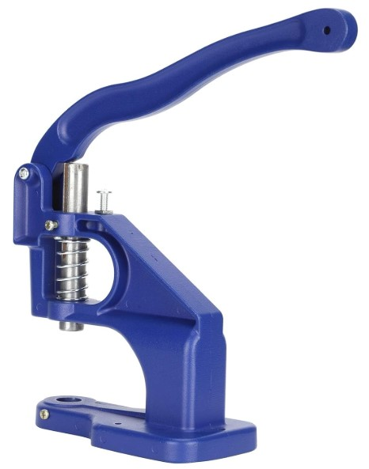
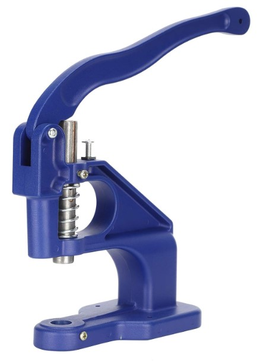
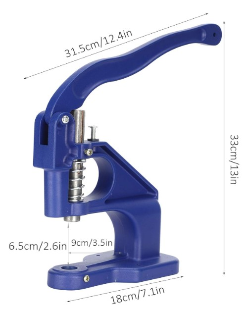
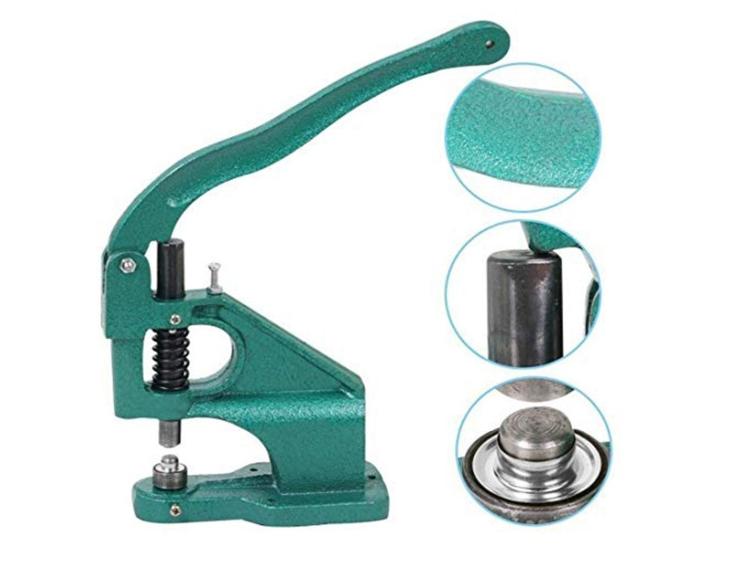
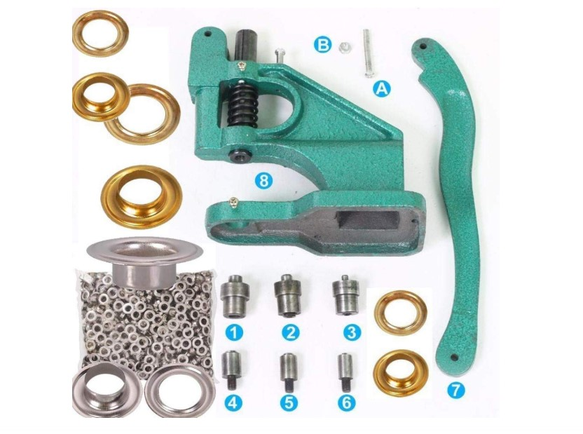
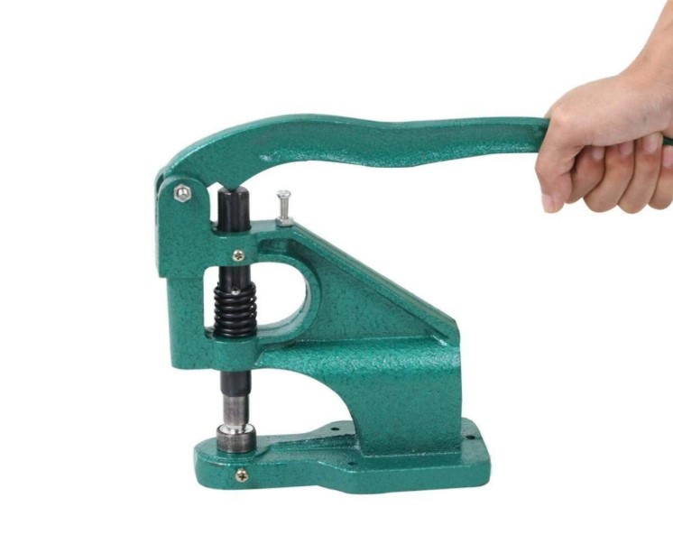

Product Overview
The Eyelet Hand Press Machine is a manual tool used for fixing metal
eyelets neatly and securely onto tarpaulins, banners, fabrics, and
various sheet materials. Its sturdy construction ensures precise
alignment and consistent results during repeated use.
This machine is widely used in tarpaulin fabrication units, banner
printing shops, packaging units, and workshops where reliable
eyelet fixing is required.
Key Features
- Strong and durable metal body
- Manual operation with high pressing force
- Ensures uniform and secure eyelet fixing
- Easy to operate and maintain
- Suitable for continuous workshop use
Specifications
- Type: Manual Hand Press
- Material: Heavy-duty Metal
- Operation: Hand-operated lever mechanism
- Compatibility: Various eyelet sizes (with dies)
- Usage: Eyelet fixing and punching
Applications & Use Cases
- Tarpaulin and tent fabrication
- Banner and flex printing units
- Industrial fabric processing
- Packaging and covering solutions
- Workshops and small manufacturing units
Best Suited For
- Tarpaulin manufacturers and repair units
- Flex banner and hoarding printing shops
- Small workshops requiring manual eyelet fixing
Selection Note
For Indian workshop conditions, selecting the correct die size
for the eyelet is critical for clean fixing. Regular lubrication
of the lever mechanism helps maintain smooth operation during
continuous daily use.
Commonly Used Along With
- Metal Eyelets (Grommets)
- Tarpaulin Sheets or PVC Flex
- Hammer or Cutting Tools for preparation
Product FAQs
-
Which eyelet sizes can be used with this machine?
The machine supports multiple eyelet sizes when used with the correct
interchangeable dies. Die selection must match the eyelet size exactly.
-
Is this machine suitable for daily commercial use?
Yes. The heavy-duty metal construction and lever mechanism make it suitable
for continuous daily use in Indian workshops and fabrication units.
-
Does the machine require electricity or air supply?
No. This is a fully manual hand press and operates without electricity
or compressed air, making it ideal for small workshops.
-
Can beginners operate this eyelet press easily?
Yes. With basic training and correct die alignment, the machine is easy
to operate and produces consistent results.
-
How do I ensure clean and secure eyelet fixing?
Proper material positioning, correct die selection, and uniform
pressing force are essential for clean and secure eyelet fixing.
-
Does the machine require regular maintenance?
Basic maintenance such as cleaning, lubrication of moving parts,
and periodic bolt tightening helps extend machine life.